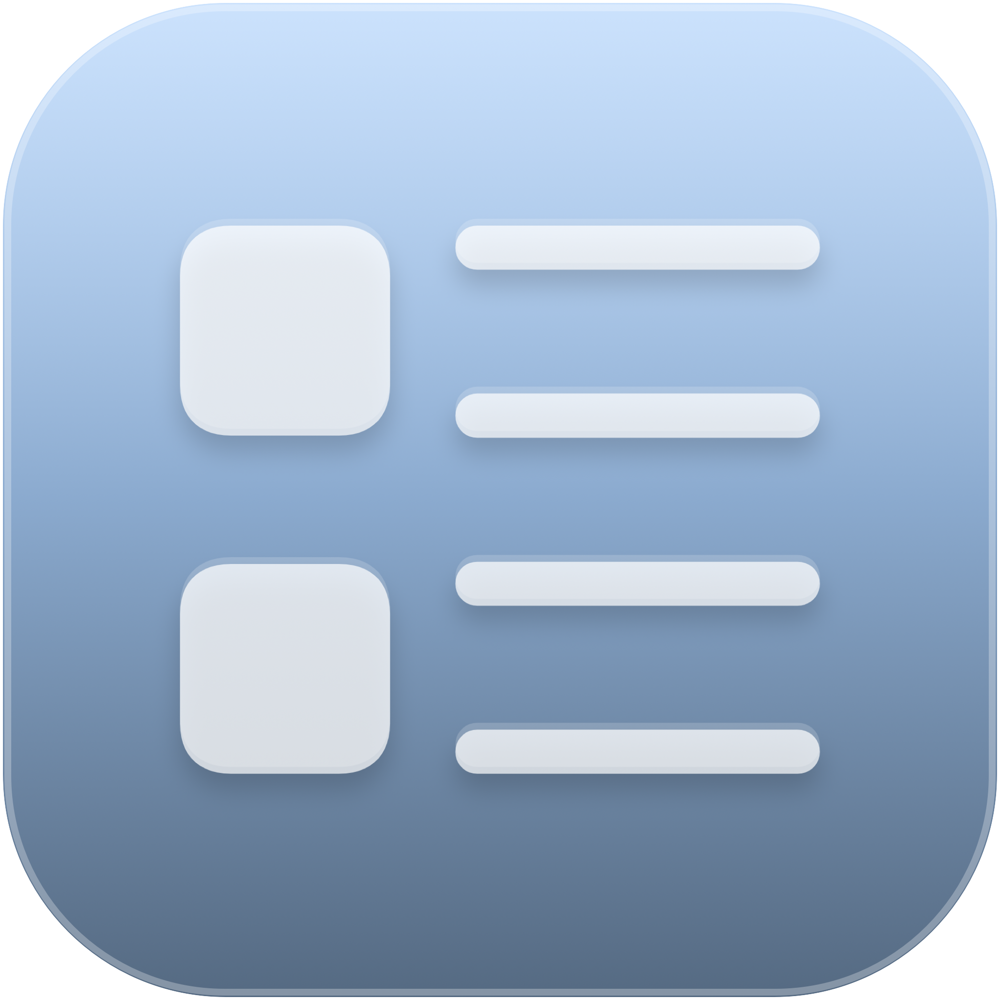
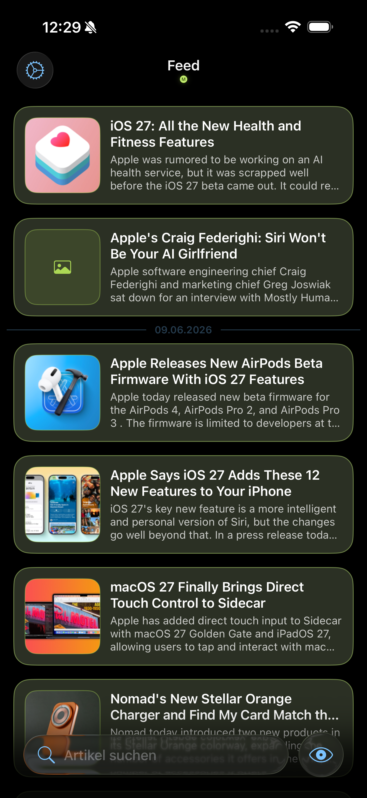
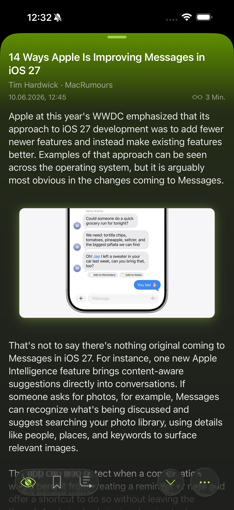
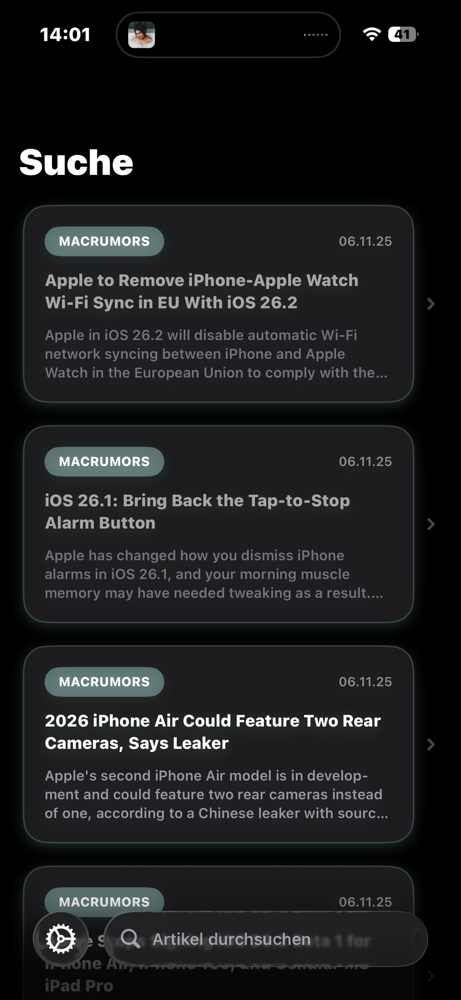
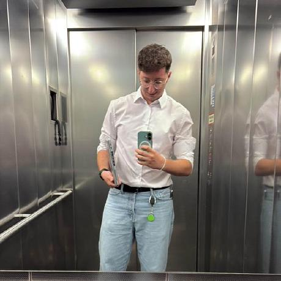
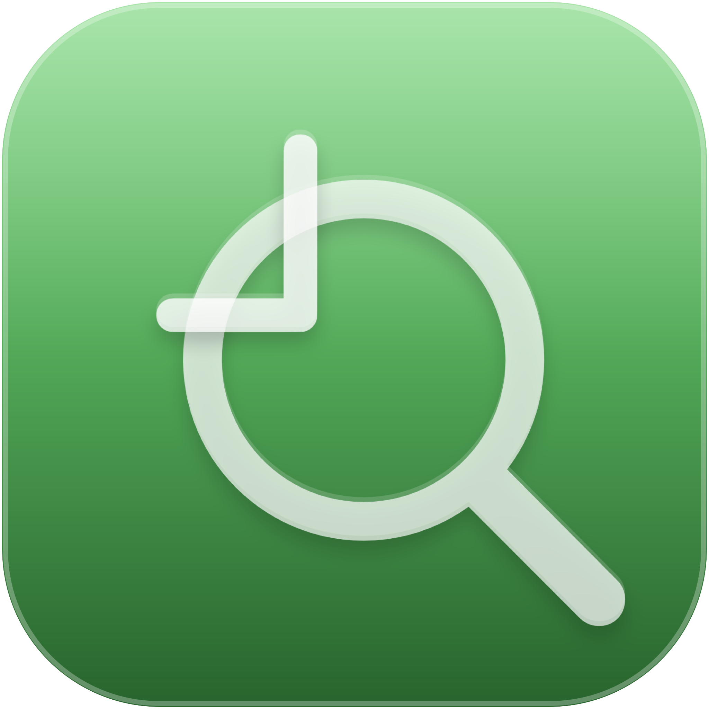
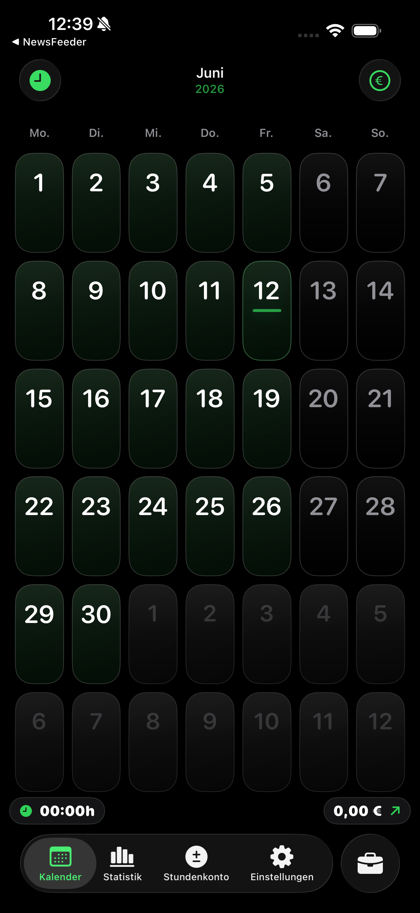
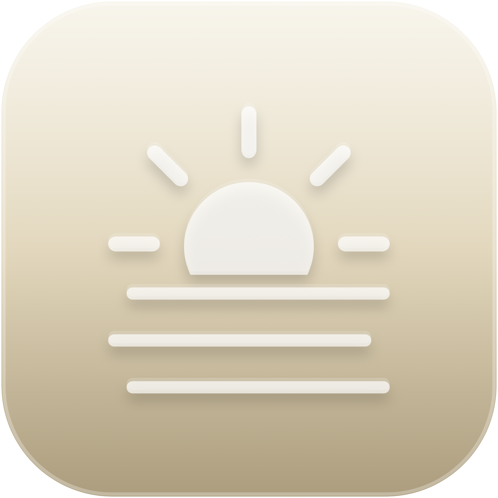

NewsFeeder
iOS App & Widgets
A focused RSS reader that keeps trusted sources searchable, offline-ready and close at hand through a flexible family of iPhone widgets.
View project


Computer science undergraduate
Support professional · Native software builder
I turn frontline support experience and product thinking into calm, reliable software for real-world workflows.

Project gallery

iOS App & Widgets
A focused RSS reader that keeps trusted sources searchable, offline-ready and close at hand through a flexible family of iPhone widgets.
View project



iOS App
A native shift workspace connecting working time, breaks, tips, expected earnings and the bigger monthly picture.
View project

iOS App & Widgets · Upcoming
A privacy-friendly weather journal with understandable, timely forecasts that remain useful offline.
View projectAbout me
I’m a computer science undergraduate at TU Dortmund with a passion for building native iOS experiences and operational tools that solve real problems.
Working close to support teams and users helps me turn recurring pain points into intuitive products and better processes.
My approach
Listen closely, ask better questions, and find the actual need.
Plan flows and interactions that stay out of the way.
Craft performant, accessible experiences with attention to detail.
Learn from feedback and continuously make things better.
Experience & education
Education
2022 – Present
Software engineering fundamentals, data structures and business administration.
2022
General university entrance qualification.
Work
2025 – Present
Handling support requests and collaborating to keep operations stable.
2021 – 2025
Strengthened reliability, resilience and customer communication.
Contact
Have an idea, an opportunity, or a workflow that deserves better software?